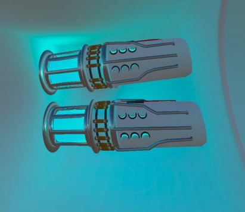
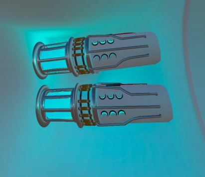

VegaSpaceR se déroule dans un univers futuriste. Nous serons alors projetés dans la peau de chercheurs ayant trouvé une vie extraterrestre. Le tout prend place dans un vaisseau spatial de retour de sa mission.
Malheureusement, en pleine traversée de la galaxie A-612, une pluie de débris vient entraver notre expédition, voire même y mettre un terme. Nous devons alors tout faire pour éviter la catastrophe, réparer le réacteur, boucher les fuites de gaz... Rien ne doit être oublié et impérativement réalisé vite avant que l’oxygène ne viennent à manquer.
Le design du jeu va être dans un style cartoonesque assez simpliste, le tout accompagné de musiques et de bruitages en accord avec l’univers. Pour créer une ambiance particulière dans laquelle le ou les joueurs seront en immersion grâce à la VR.
L’histoire sera donc une suite de quêtes à réaliser à la manière d’un escape game. Le but est simple, seul ou en équipe, les joueurs devront régler les différents problèmes rencontrés dans le vaisseau pour pouvoir arriver à bon port.


 


En gros : C'est un jeu VR
En un peu plus précis :
Après l'incident les joueurs doivent réparer le vaisseau et régler les différents problèmes qui s'y trouvent.
Cependant le temps est compté !
En effet, plusieurs brèches se sont ouvertes après le malencontreux passage des débris spatiaux, la pressurisation du vaisseau est mise à rude épreuve !
Si les brèches ne sont pas refermées rapidement l'oxygène viendra à manquer dans le vaisseau...
Heureusement l’Unité Numérique à Interface Technologique en Yttrium (Unity-39) est là pour nous aider !
Unity-39 est une gentille IA qui à été créer dans le but d'aider les scientifiques durant leurs expéditions. Après l'incident Unity-39 s'avère très utile, étant polyvalente et n'hésite pas à venir porter son aide lorsque l'on a besoin d'elle !
Chaine Youtube : VegaSpaceR
Instagram : VegInstaSpaceR